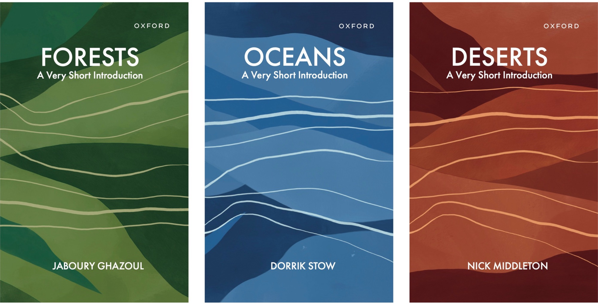
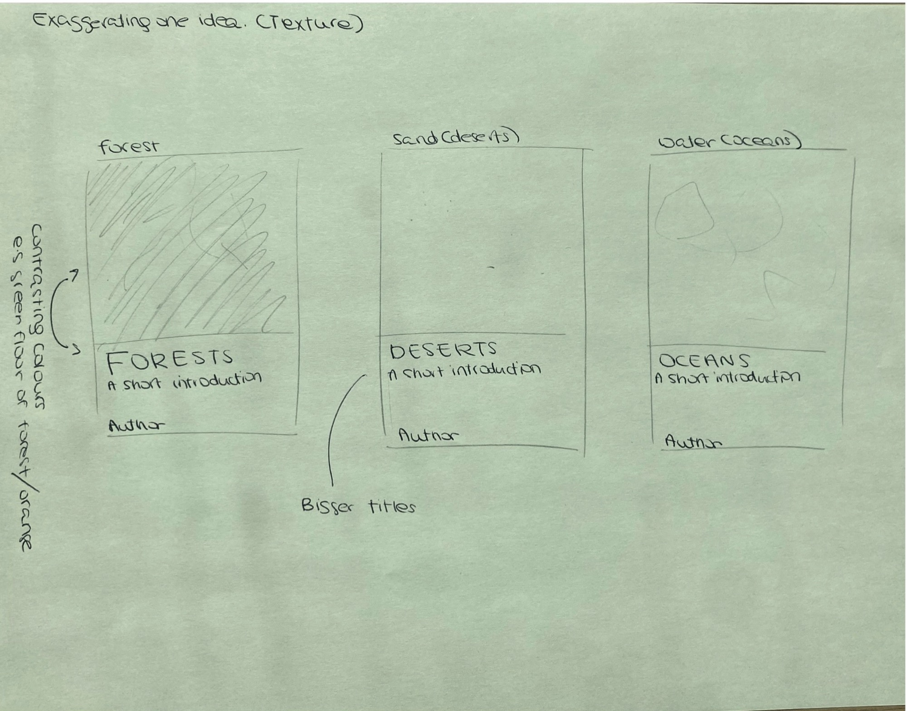
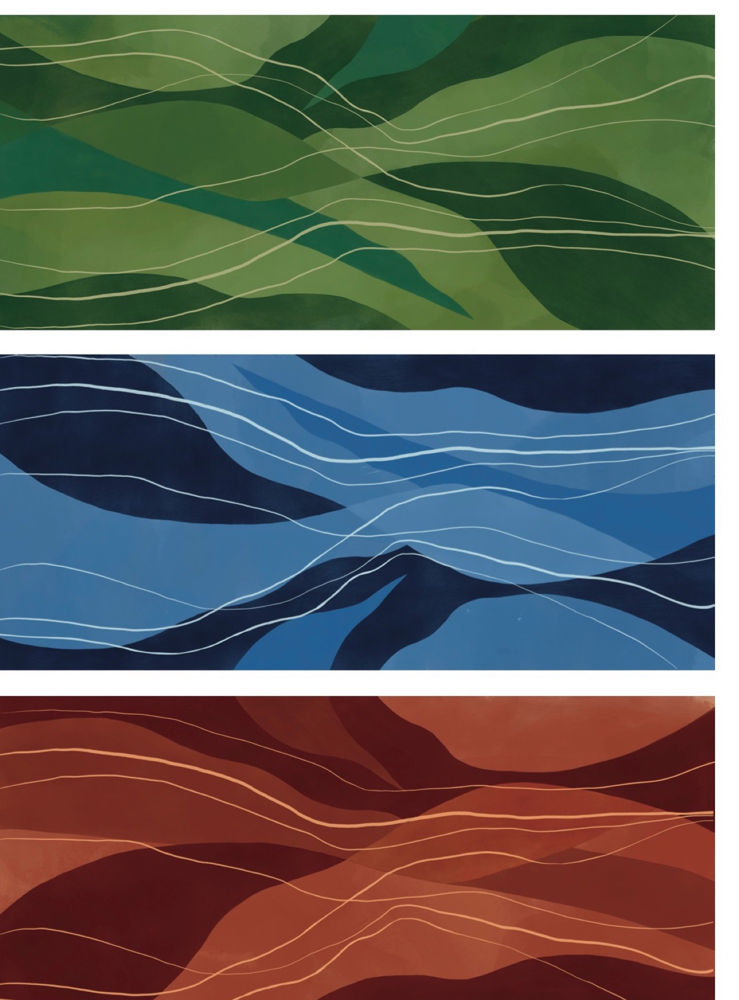
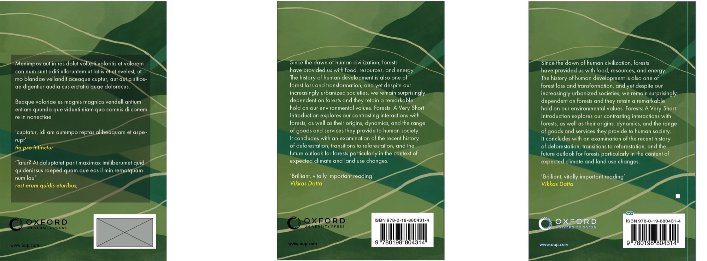
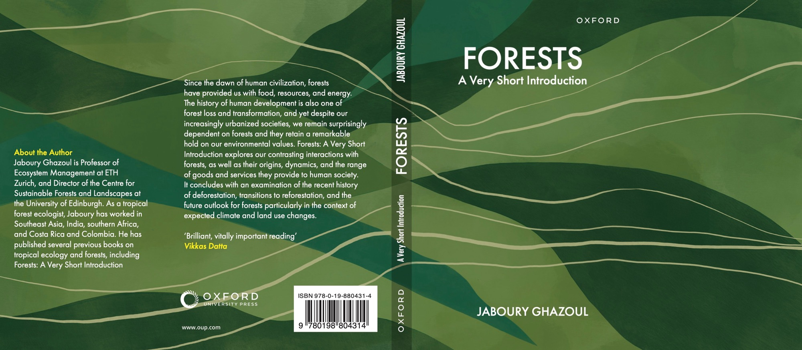
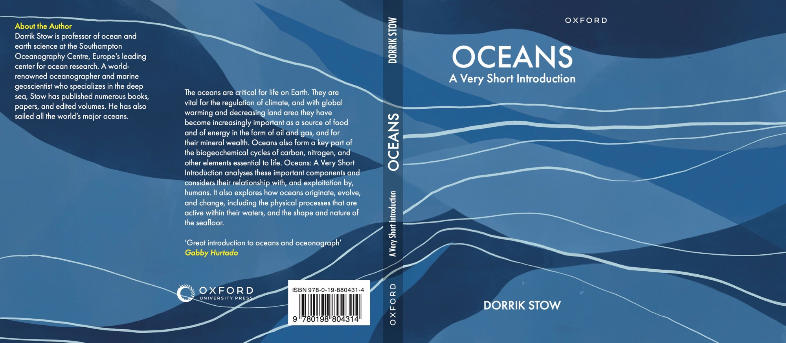
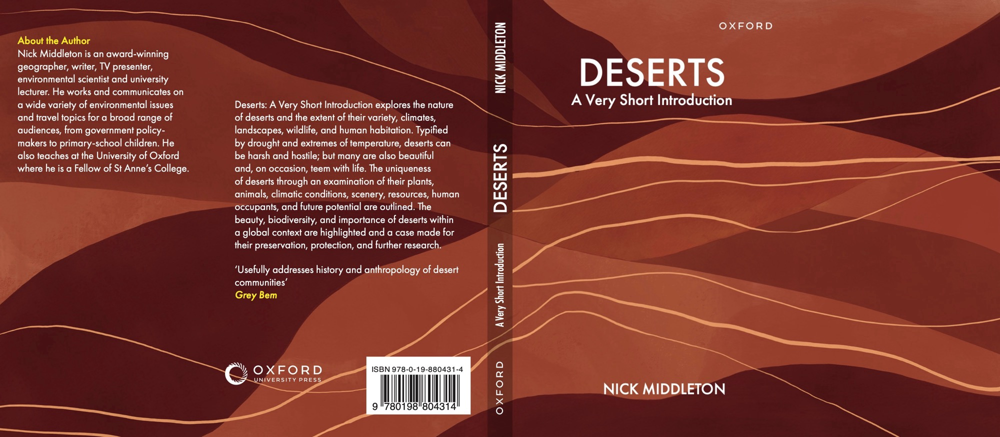
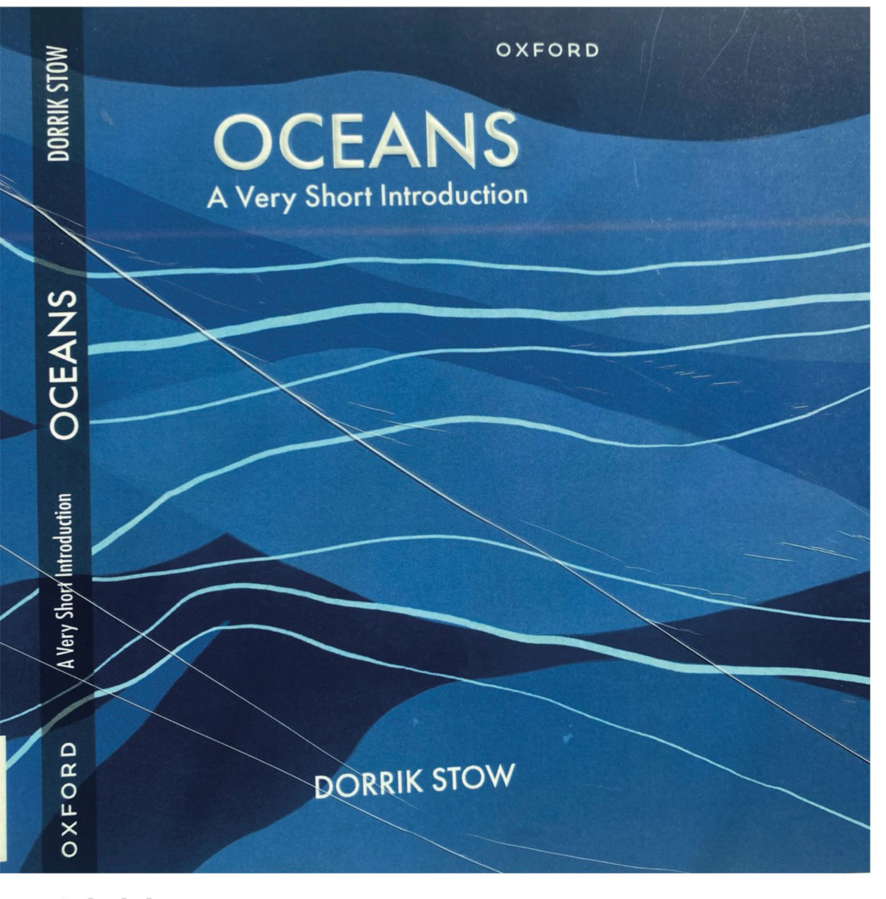
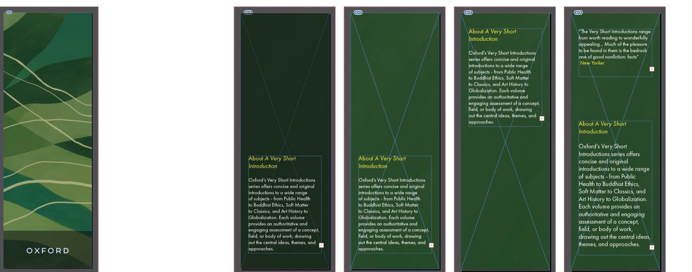

Case Study 05 — Book Cover Design
A series of three covers for Oxford University Press's Very Short Introductions: Forests, Oceans and Deserts, tied together by hand-painted landscape patterns.

OUP's Very Short Introductions is a series of over 700 books written for curious, educated readers, from students to professionals. The brief was to pick three titles and design a series of 174 × 111 mm paperback covers with flaps, following OUP's branding rules and keeping a credible, authoritative tone.
I chose Forests, Oceans and Deserts, linked by environmental science.
Book covers today have to work on a shelf, on Amazon and as a tiny square on Instagram. The strongest ones I found had a clear focal point, contrasting colour and a title readable from a distance. My two rules for the project were to stay legible at small sizes and to make the three books feel like a series.
In workshops I explored the link between the three titles through mind maps, illustrative and typographic sketches, and settled on texture and natural patterns as the idea to push.

I painted the backgrounds in Procreate, building up soft, layered bands of colour crossed by flowing lines that suggest each landscape, with green for forests, blue for oceans and red-brown for deserts. I worked at five times the book's size so the artwork stayed sharp in print.
At first each cover used the same pattern in a different colour. Feedback suggested giving each book its own shapes as well, so I redrew the ocean and desert patterns.

I chose Futura PT, a slightly taller version of Futura, because a clean sans serif reads clearly over the busy lines where a serif would clash. The front covers are centred, with the Oxford imprint kept 12 mm from the edge as the guidelines require.
The back cover was the hardest part. A dark box behind the text looked heavy against the soft painting, so I moved the lines themselves so they no longer cross the text.

The final jackets: back cover with author bio, blurb and endorsement, spine, and front.



I embossed the titles so they stand out from the painting, and laminated the covers to stop the colour cracking at the folds. Lamination proved tricky and left some creasing, but it barely shows against the flowing shapes of the pattern. As a marketing piece, I designed a bookmark that adapts each cover's pattern.


Get in touch